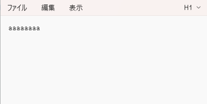

#include <BleKeyboard.h>
BleKeyboard bleKeyboard("ESP32 Keyboard");
const int buttonPin = 15;
bool pushed =false;
void setup() {
pinMode(buttonPin, INPUT_PULLUP);
Serial.begin(115200);
Serial.println("Starting BLE work!");
bleKeyboard.begin();
}
void loop() {
if (bleKeyboard.isConnected()) {
int buttonValue = digitalRead(buttonPin);
if(buttonValue == LOW){
if(pushed ==false){
bleKeyboard.print("a");
pushed = true;
}
}
else{
pushed = false;
}
}
delay(10);
}
